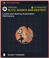
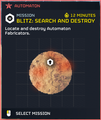
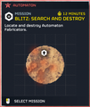
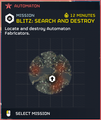
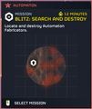
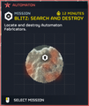
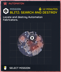
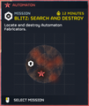

“The 机器人 have gained ground in this region, constructing a vast 网络 of Fabricators which allow them to replicate 极其 rapidly.
We have detected a narrow window of 维护, giving us a chance to strike at their facilities. 摧毁 all that you can.— 任务 简报
Blitz 搜索与摧毁/机器人
| 终结族 | 机器人 | 光能者 |
“The 机器人 have gained ground in this city, constructing a 网络 of Fabricators which allow them to replicate 极其 rapidly.
Their locations have been identified. We must strike now before they self-replicate out of 控制.— 任务 简报, city 任务
“机器人 troops are 质量 produced daily in the bowels of this Megafactory, then deployed in 服务 of the 生化人' senseless expansionism.
Disrupt their industry of death. 摧毁 their fabricators one by one.— Megafactory 任务 简报, Cyberstan 任务
Blitz: 搜索与摧毁 is a 任务 in 绝地潜兵 2. To 完成 the 目标, 绝地潜兵 must 摧毁 a specific amount of 机器人 Fabricators, which 变更 with 难度. Minor Places of Interests can spawn in this 任务 类型.
目标 Steps
摧毁机器人构筑者
“寻找并消灭机器人构筑者。
— 星系战争 Table 描述
- 寻找并消灭所有运作中的机器人构筑者
- A random number of 机器人 fabricators must be destroyed.
- Reward: Before multipliers, between 375 and 1250
 申购点 Slips, and between 75 and 250
申购点 Slips, and between 75 and 250  经验值 depending on the 难度.
经验值 depending on the 难度.
战术信息
- Due to the presence of 机器人 and the low 持续时间 of the 任务, it's an 极佳 choice for a Solo Super Sample run
- Because this 任务 is about locating 机器人 Fabricators, it is recommended to bring 战略配备 和 武器 capable of destroying them. Especially those capable of destroying them from very 远距离, such as:
- the LAS-99 类星体加农炮 or GR-8 无后坐力炮 can 摧毁 fabricators on impact from long distances.
- Eagle Strafing Runs 和 鹰式空袭 can 摧毁 Fabricators very easily.
各难度地图

 中型 机器人
中型 机器人
 挑战 机器人
挑战 机器人
 困难 机器人
困难 机器人
 极难 机器人
极难 机器人
 自杀任务 机器人
自杀任务 机器人
 不可能 机器人
不可能 机器人
 绝地潜兵难度 机器人
绝地潜兵难度 机器人
 超级绝地潜兵难度 机器人
超级绝地潜兵难度 机器人
变更历史
补丁
描述
1.006.202
2026-04-28
修复
- 工厂 Striders will 否 longer count as Fabricators in the 摧毁 机器人 Fabricators 任务
主体 目标
Activate Oil Pumps • Activate TCS+ 车站 • Activate 终结族控制系统 • Blitz 搜索与摧毁/终结族 • Blitz: Secure 研究 Site • Chart 终结族 Tunnels • 净化侵染区域 • 收集 Gloom Spore Readings • 收集 Gloom-Infused Oil • 收集气象数据 • Conduct Mobile E-711 撤离 • Deactivate 终结族控制系统 • Deploy Dark Fluid • 摧毁 Spore Lung • 消灭吐酸泰坦 • 消灭虫族指挥官 • 消灭强袭虫 • 消除 穿刺虫 • 设法采油 • 歼灭 终结族 Swarm • 撤离 E-711 • 撤离 研究 Probe Data • Nuke Nursery • 清除孵化点 • 重新开始 Pumps • 恢复空气质量
Annex Untapped Mineral Sites • Blitz 搜索与摧毁/机器人 • Blitz: 摧毁 Bio-Processors • 突击兵: 获取 证据 • 突击兵: 撤离 Intel • 突击兵: Secure Black Box • 没收资产 • 摧毁指挥碉堡 • 摧毁传输网络 • 消除 机器人 移动工厂 • 消灭机器人巨型者 • 消除 Devastators • 歼灭 机器人 Forces • 使生化人停产 • Neutralize Ground-to-Orbit Defenses • 快速夺取 • 破坏航空基地 • 破坏 Orgo-Plasma Synthesis • 破坏补给基地 • 占领工业联合体
Optional 目标
进行地质勘测 • 摧毁 Rogue 研究 车站 • 发射洲际弹道导弹 • 移动雷达 • 雷达站 • 增援太空舱 • SEAF 大炮 • SEAF SAM Site • 传播民主 • 关停非法广播 • Upload Escape Pod Data